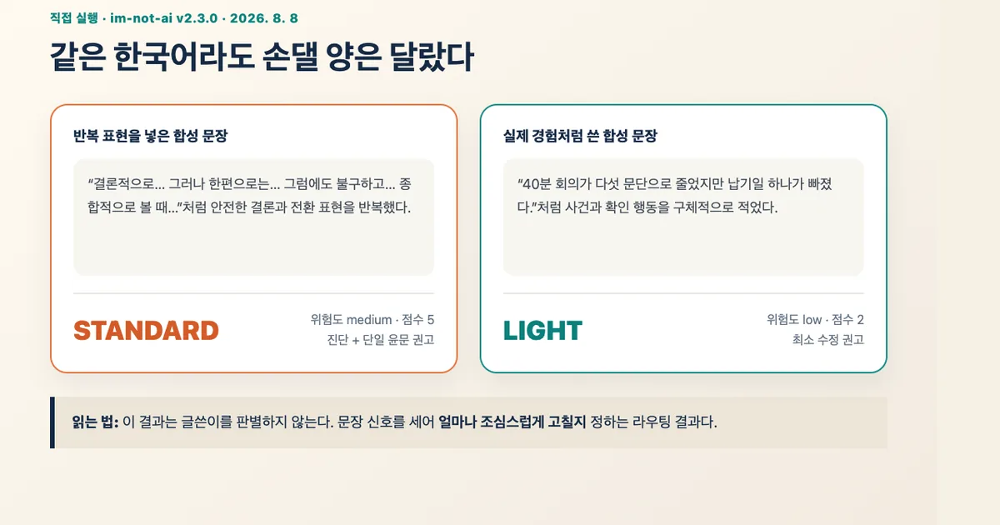
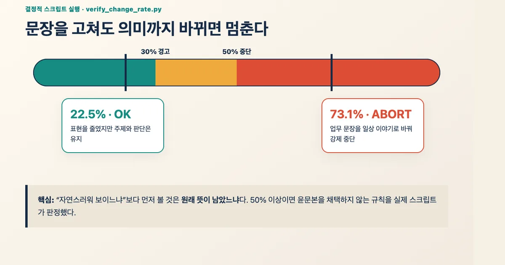
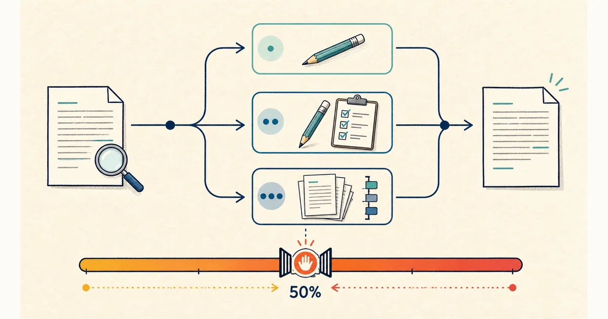

2026. 8. 8 (토) · 약 12분
문장을 자연스럽게 고쳤는데 사실·논지·말투까지 달라졌다면 윤문에 성공했다고 보기 어렵다. GitHub의 im-not-ai는 한국어에서 반복되는 번역투와 기계적 전환 표현을 찾고, 글의 상태에 따라 수정 강도를 나누는 공개 프로젝트다. 이번 실험에서는 전역 설치나 AI 윤문 호출을 하지 않고 v2.3.0의 결정적 Python 스크립트만 격리 실행했다. 반복 표현을 넣은 합성 문장은 standard, 경험을 구체적으로 적은 합성 문장은 light로 갈렸다. 원문과 크게 다른 문장을 넣자 변경률 73.1%에서 실제로 중단됐고, 의미를 유지한 작은 수정은 22.5%로 통과했다.
업무자동화 실험
실행 기록 · epoko77-ai/im-not-ai v2.3.0 · 2026. 8. 8
im-not-ai 사용법: AI 글투 진단과 변경률 가드 직접 실험
im-not-ai v2.3.0의 라우팅과 변경률 검사 스크립트를 합성 한국어 문장에 실행해 수정 강도와 강제 중단 기준을 확인했다.
문장이 매끄러운데 내 글은 아닌 순간
AI 초안을 다듬을 때 가장 눈에 띄는 문제는 안전한 결론 전환어, 양면을 맞추는 문장, 과장된 평가 표현이 반복되는 것이다. 이런 말을 지우는 일은 어렵지 않다. 더 어려운 문제는 문장이 자연스러워지는 동안 원래 주장과 사실도 조금씩 바뀌는 것이다. 블로그 글이라면 글쓴이의 경험이 사라지고, 업무 문서라면 숫자와 책임 범위가 흐려질 수 있다. 자연스러움만 점수로 삼으면 많이 고친 결과가 더 좋아 보이는 함정이 생긴다.
im-not-ai는 한국어 번역투, 기계적인 병렬, 피동 표현, 과도한 불릿과 접속사 등을 분류한 오픈소스 프로젝트다. README는 의미·사실·수치·고유명사를 유지하고 탐지된 구간만 고치며, 변경률이 30%를 넘으면 경고하고 50% 이상이면 중단하는 원칙을 내세운다. 이름만 보면 AI 판별기처럼 느껴질 수 있지만 이번에 실행한 코드는 글쓴이가 사람인지 AI인지 판정하지 않았다. 문장 신호를 세어 수정 경로를 추천하고, 수정 전후가 얼마나 달라졌는지를 계산했다.
설치하지 않고 결정적 스크립트만 꺼냈다
검증 대상은 2026년 7월 22일 공개된 v2.3.0 태그와 커밋 82137e858763dadb99561f194c5c00465735017b다. 저장소는 별도 임시 폴더에 얕게 복제했고 install.sh는 실행하지 않았다. 전역 스킬 경로, 개인 문서, API 키도 건드리지 않았다. Python 3.9.6에서 prepare_monolith_input.py와 verify_change_rate.py 두 파일만 실행했다. 첫 번째는 원문 메트릭과 route_hint를 만들고, 두 번째는 원문과 수정본의 변경률을 계산해 종료 코드 0·1·2로 통과·경고·중단을 구분한다.
git clone --depth 1 --branch v2.3.0 https://github.com/epoko77-ai/im-not-ai.git /tmp/im-not-ai
cd /tmp/im-not-ai
python3 scripts/prepare_monolith_input.py --run-dir /tmp/sample --genre blog
python3 scripts/verify_change_rate.py --before /tmp/before.txt --after /tmp/after.txt이 명령만으로 최종 윤문본이 만들어지는 것은 아니다. prepare_monolith_input.py는 정량 점수와 권고 경로를 원문 앞에 붙이는 전처리 단계다. 실제 문장 수정은 연결된 AI 스킬이 맡는다. 따라서 이번 실험은 ‘이 도구가 글을 얼마나 잘 고치는가’가 아니라 ‘수정 전에 강도를 나누고, 수정 뒤에 과도한 변화를 막는 코드가 설명대로 움직이는가’를 확인한 범위다.
같은 한국어라도 손댈 양은 달랐다
첫 입력에는 결론 전환, 반대 관점, 안전한 종합 문구를 여러 번 반복하고 이중 피동 표현도 섞었다. 두 번째 입력은 회의 요약에서 납기일 하나를 놓칠 뻔한 장면과 그 뒤의 확인 습관을 구체적으로 적었다. 둘 다 실제 사람이나 업무 정보가 없는 합성 문장이다. 기대한 결과는 첫 입력이 두 번째보다 무거운 수정 경로를 받는 것이었다.
| 입력 | 위험도·점수 | route_hint | 권고 |
|---|---|---|---|
| 반복 표현 합성 문장 | medium · 5 | standard | 진단 + 단일 윤문 |
| 경험 중심 합성 문장 | low · 2 | light | 최소 수정 |

실제 출력은 예상과 같았다. 다만 standard가 ‘나쁜 글’, light가 ‘사람이 쓴 글’을 뜻하지는 않는다. 저장소 코드도 route_hint를 권고로 다루며 사용자가 무시할 수 있게 한다. 특히 짧은 글에서는 문장 몇 개가 전체 점수에 크게 영향을 줄 수 있다. 이 결과는 두 개의 작은 합성 표본에서 경로 분기가 작동했다는 증거이지, 한국어 글 전체의 품질을 평가한 벤치마크가 아니다.
안전한 수정이라고 썼는데 66.7%에서 막혔다
변경률 실험에서는 일부러 한 번 실패했다. ‘생성형 AI는 업무 효율성을 향상시키는 혁신적인 도구입니다’라는 원문을 더 구체적인 문장으로 바꾸었지만, 문장 대부분을 새로 쓴 탓에 첫 결과는 66.7%였다. 내용이 비슷하다고 생각했어도 스크립트는 50% 중단선을 넘었다고 판정했다. 그래서 사실을 추가하지 않고 ‘향상시키는’을 ‘높이는’으로, ‘문제가 존재할 수 있다’를 ‘문제는 남을 수 있다’로만 줄여 다시 실행했다.
| 수정본 | 변경률 | 종료 판정 | 처리 |
|---|---|---|---|
| 표현만 줄인 수정 | 22.5% | OK | 채택 가능 |
| 주제까지 바꾼 수정 | 73.1% | ABORT | 채택 금지 |

변경률이 낮다고 사실 보존이 자동으로 증명되는 것도 아니다. 숫자 하나나 부정어 하나만 바뀌어도 문자 변화량은 작을 수 있다. 반대로 마크다운 제목과 불릿을 문장으로 바꾸면 뜻은 같아도 변경률이 커질 수 있다. 이 수치는 사람 검토를 없애는 점수가 아니라 검토할 이유를 빠르게 알려 주는 브레이크에 가깝다. 수치·날짜·고유명사·직접 인용은 변경률과 별개로 원문과 대조해야 한다.
무거운 경로가 항상 더 좋은 것은 아니다
프로젝트는 light, standard, heavy 세 경로를 둔다. light는 이미 자연스러운 글에 최소 수정을 권하고, standard는 진단 뒤 지배적인 패턴을 겨냥한다. heavy는 반복 신호가 많거나 1만5천 자를 넘는 초장문처럼 더 많은 검증이 필요한 경우에 쓴다. 모든 글을 heavy로 보내면 규칙과 원문을 여러 번 읽는 비용이 커지고, 손대지 않아도 될 문장까지 바뀔 가능성도 높아진다. 잘 쓴 부분을 보존하는 것이 기능의 일부라는 설계다.

Codex에서는 저장소가 제공하는 단일 호출 스킬을 쓸 수 있고, README가 설명하는 다중 진단·finalize 경로는 Claude Code 쪽 구성이다. 설치 방식과 지원 범위는 바뀔 수 있으므로 실제 적용 전에는 현재 README와 릴리스 노트를 다시 확인해야 한다. 특히 install.sh는 전역 스킬 디렉터리에 심링크를 만들 수 있다. 기존에 같은 이름의 스킬이 있거나 자동 업데이트를 붙일 계획이라면 --dry-run과 설치 대상부터 확인하는 편이 안전하다. 이번 실험에서 전역 설치를 생략한 이유도 도구의 판단 코드와 설치 부작용을 분리하기 위해서였다.
- 공개 저장소의 태그나 커밋을 고정하고 README·설치 스크립트·권한 요구를 먼저 읽는다.
- 개인정보와 미공개 문서가 없는 짧은 복사본으로 라우팅과 변경률부터 확인한다.
- 수치·날짜·고유명사·출처·부정 표현은 변경률과 별개로 원문과 직접 대조한다.
- 30% 이상이면 바뀐 구간을 설명할 수 있는지 확인하고, 50% 이상이면 결과를 버린다.
- AI 판별 회피나 출처 은폐에 쓰지 않고, 원래 작성자의 책임과 인용을 그대로 남긴다.
적용 범위가 어긋나면 원문으로 돌아간다
이번 실험은 macOS 26.5.2, Python 3.9.6, im-not-ai v2.3.0의 결정적 스크립트와 Headless Chrome 151에서 수행했다. AI 모델을 호출하지 않았고 최종 윤문본의 자연스러움, 표절 여부, 저자 판별 정확도, 긴 문서의 처리 비용은 측정하지 않았다. 화면의 두 표본과 두 수정본도 설명을 위한 최소 합성 데이터다. 다른 장르와 길이에서는 route_hint와 변경률이 달라질 수 있다.
결과가 이상하면 생성한 metrics 파일과 수정본을 삭제하고 원문 복사본에서 다시 시작한다. 전역 설치를 했다면 저장소의 uninstall 안내를 확인하되, 다른 스킬 폴더를 함께 지우지 않는다. 원문 의미가 흔들렸다면 프롬프트를 더 세게 쓰기보다 수정 대상을 ‘문두 접속사만’처럼 좁히는 편이 복구가 쉽다. 저장소가 업데이트되어 라우팅 임계나 30%·50% 기준이 바뀌면 같은 네 파일로 다시 실행하면 이전 결과와 바로 비교할 수 있다.
윤문 도구의 결과를 채택할 책임은 여전히 글을 공개하는 사람에게 있다. 자연스러운 문체는 출처와 경험을 대신하지 않는다. 블로그라면 실제로 확인한 화면과 실패를 남기고, 업무 문서라면 승인자와 원본을 함께 보관해야 한다. 도구는 반복 표현을 찾는 데 도움을 줄 수 있지만 무엇을 말할지는 대신 정해 주지 않는다.
AI 티를 줄이는 가장 안전한 방법은 많이 고치는 일이 아니라, 왜 고쳤는지 설명할 수 있는 범위만 바꾸는 일이다.
참고한 자료
im-not-ai의 흥미로운 지점은 문장을 무조건 사람처럼 보이게 만드는 데 있지 않았다. 손댈 양을 먼저 나누고, 고친 뒤에는 원문과 얼마나 멀어졌는지 다시 계산하는 데 있었다. 이번에 확인한 것은 이 두 결정적 스크립트의 동작뿐이며 최종 윤문 품질이나 AI 작성 여부 판별 능력은 검증하지 않았다. 직접 적용한다면 공개되지 않은 문서보다 짧은 테스트 문단부터 복사본으로 실행하고, 변경률과 수치·출처 보존 여부를 함께 확인한 뒤 범위를 넓히는 편이 안전하다.